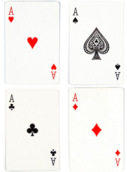
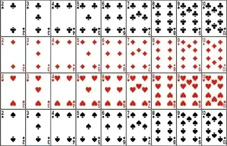
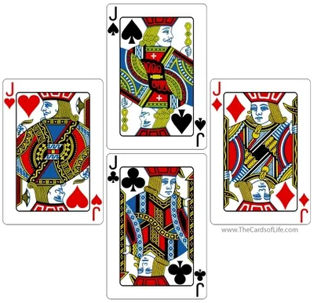
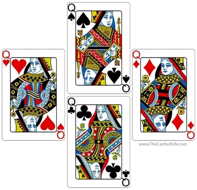
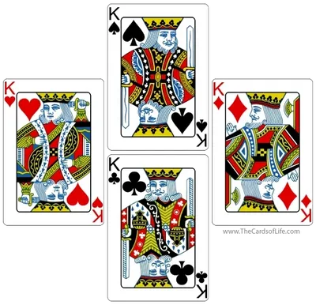
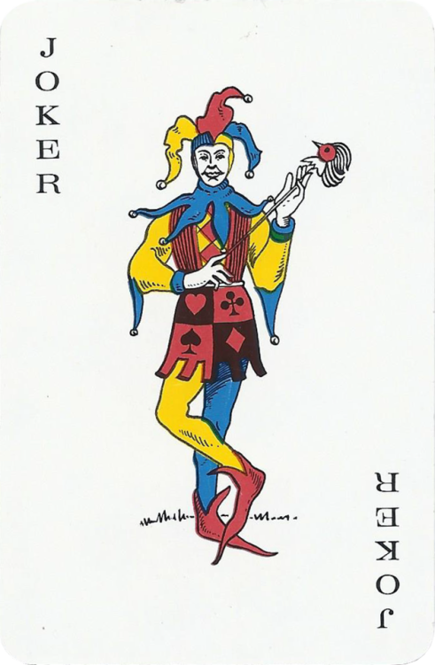

O Que É O Baralho?
Impregnados em nossa cultura, os jogos que utilizam o baralho são extremamente populares. O conjunto de cartas ilustradas e numeradas é utilizado em diversos jogos de cartas e de adivinhação, no ilusionismo, na cartomancia, enfim. O baralho francês, composto por 52 cartas de quatro naipes, é o mais popular de todos, e o qual será explicado.
As Cartas
O mais popular tipo de baralho, o baralho francês ou de naipe francês, possui 52 cartas, divididas em quatro naipes: paus (♣), ouros (♦), copas (♥) e espadas (♠), sendo os de paus e espadas representados com a cor preta, e os de ouros e copas com a cor vermelha. Cada naipe contém 13 cartas, incluindo o ás, figuras (rei, rainha e valete) e cartas numeradas de 2 a 10. Para além destas 52 cartas, baralhos comerciais geralmente incluem dois curingas.
| Carta | Tipo de Carta | Valor | Curiosidades |
|---|---|---|---|
|  | Ás ("Ace") | 1 | Representado por A ou 1. O nome "Ás" vem do francês antigo "as" e significava "uma unidade". Era utilizado para se referir à face 1 do dado. O ás de espadas, a carta de maior valor em alguns jogos, tem seu símbolo único originado no Século XVII, com uma lei de Jaime I da Inglaterra impondo que esta carta exibisse o símbolo da casa de impressão. |
|  | Numeradas | De 2 a 10 | Representado pelos números de 2 a 10. |
|  | Valete ("Jack") | 11 | Representado por J. Os desenhos das cartas representam nobres e cavaleiros reais ou fictícios. São eles:
|
|  | Rainha/Dama ("Queen") | 12 | Representado por Q. Os desenhos das cartas representam personagens religiosos. São elas:
|
|  | Rei ("King") | 13 | Representado por K. Os desenhos das cartas representam monarcas. São eles:
|
|  | Curinga ("Joker") | Nenhum | Última carta a ser adicionada no baralho, não tendo naipe específico. Tem origem no Século XIX, como carta trunfo no jogo americano Euchre. Em vários jogos é utilizada como carta de reposição. |
Uma variação do baralho francês com 56 cartas possui mais 4 cartas com um novo personagem: o Cavaleiro. Também existe o baralho francês de 56 cartas (Baralho Cavalheiresco) que é uma variação do baralho francês de 52 cartas. Essa versão inclui quatro cartas adicionais, conhecidas como “Cavaleiro” (C ou Kn). Essas quatro cartas extras são o cavaleiro de paus, copas, espadas e ouros, sendo usadas em alguns jogos específicos, como o Belote, popular na França e em outros países europeus. O uso do Baralho Francês de 56 cartas é específico para certos jogos que exigem essas cartas adicionais. As cartas de cavaleiro são frequentemente usadas para aumentar a complexidade e a estratégia do jogo.